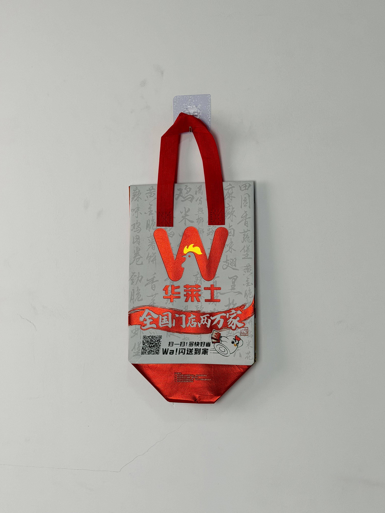

A silver insulated tote designed for Wallace, China's largest local fried-chicken chain, featuring bold calligraphic branding and a QR-integrated delivery system that connects 20,000 locations through unified packaging.

Wallace is China's largest domestic quick-service restaurant chain, with over 20,000 locations spanning every province and autonomous region. Positioned as the affordable alternative to international brands like KFC and McDonald's, Wallace built its empire through aggressive franchising, localized menu innovation, and operational efficiency. The brand's iconic red "W" logo is visible in virtually every Chinese city, from tier-1 commercial districts to county-level towns.
With 20,000 stores, our packaging has to work everywhere — from Shanghai skyscrapers to rural county towns. It needs to look good whether it's carried by a Meituan rider or handed across a county counter.
The packaging upgrade project addressed a critical scaling challenge: Wallace's previous generic plastic bags created no brand differentiation in an increasingly competitive delivery market. The new insulated tote needed to unify brand presentation across a wildly diverse geographic footprint while remaining cost-effective enough for franchisees operating on thin margins.
The design strategy balances national brand consistency with local cultural resonance. The silver base provides a neutral, modern canvas that reads as premium regardless of regional aesthetic preferences. The background features Chinese calligraphy in a watermark pattern — a design choice that grounds the brand in cultural authenticity while the bold red "W" logo ensures instant recognition.
Scaled for maximum visibility, the Wallace W functions as an unmistakable brand beacon across all delivery contexts.
Subtle Chinese character pattern adds cultural texture and premium depth without competing with primary branding.
Embedded scan code links to mobile ordering, converting every delivered bag into a customer reactivation channel.
Metallic silver base reads as modern and premium across China's diverse regional markets without cultural specificity.
Wallace's franchise model demanded packaging that could be manufactured at massive scale without quality degradation. Every specification was selected for batch consistency, cost efficiency, and nationwide logistics compatibility.
| Parameter | Specification | Test Standard |
|---|---|---|
| Thermal Retention | > 55°C for 25 min | Internal Protocol |
| Load Capacity | 5 kg | ASTM D5265 |
| Color Consistency | Delta E < 1.5 | Internal Protocol |
| Seam Strength | > 25 N/cm | ASTM D1683 |
Producing for a 20,000-location franchise network requires extraordinary supply-chain discipline. The five-stage workflow was designed to deliver 500,000 units per month with color consistency that ensures a bag in Tibet matches one in Shanghai.
100gsm non-woven PP laminated with metallized silver BOPP film. Inline color monitoring ensures batch-to-batch consistency.
CMYK plus dedicated spot red for W logo. Automated registration control maintains ±0.3mm tolerance at 200m/min line speed.
3mm EPE foam laminated to aluminum-PE barrier. Continuous roll bonding at 3kg/cm pressure for uniform thermal performance.
Ultrasonic cutting with sealed edges. QR code panel positioned within ±1mm tolerance for reliable scanning.
Automated handle attachment with vision-guided stitching. Packed by regional distribution zones for direct franchise delivery.
The insulated tote was deployed across Wallace's entire national network over a six-month phased rollout. The upgrade replaced an estimated 200 million annual plastic bags with branded thermal carriers, representing one of the largest QSR packaging transformations in Chinese market history.
Key Insight: The QR code integration proved unexpectedly valuable. Scan data revealed that customers in fourth-tier cities showed higher repurchase intent than tier-1 customers when exposed to the bag's mobile ordering link — suggesting the packaging effectively bridged digital gaps in less saturated markets.
The silver color created a distinctive visual signature that differentiated Wallace bags from competitors' predominantly white or orange carriers. Delivery riders reported that customers could identify Wallace orders from across apartment complex lobbies, reducing pickup confusion and failed deliveries.
Three design decisions differentiate this franchise packaging from typical QSR delivery solutions. Each addresses the unique challenge of maintaining brand coherence across a 20,000-location network.
Unlike red or yellow — colors with strong regional associations in China — silver reads as universally modern and premium. This neutrality ensures the bag communicates quality equally in wealthy coastal cities and developing inland counties.
The background calligraphy pattern performs subtle cultural work. For older consumers, it signals tradition and authenticity; for younger demographics, it reads as trendy "guochao" (national trend) aesthetics. This dual reading maximizes cross-generational appeal.
Using a dedicated spot red rather than process-color CMYK for the W logo eliminates color drift across massive production runs. This technical decision ensures that a franchisee in remote Yunnan receives packaging visually identical to flagship Shanghai stores.
We manufacture thermal delivery bags for China's largest franchise chains. From spot-color consistency to regional distribution logistics, we handle the complexity of nationwide packaging rollouts.